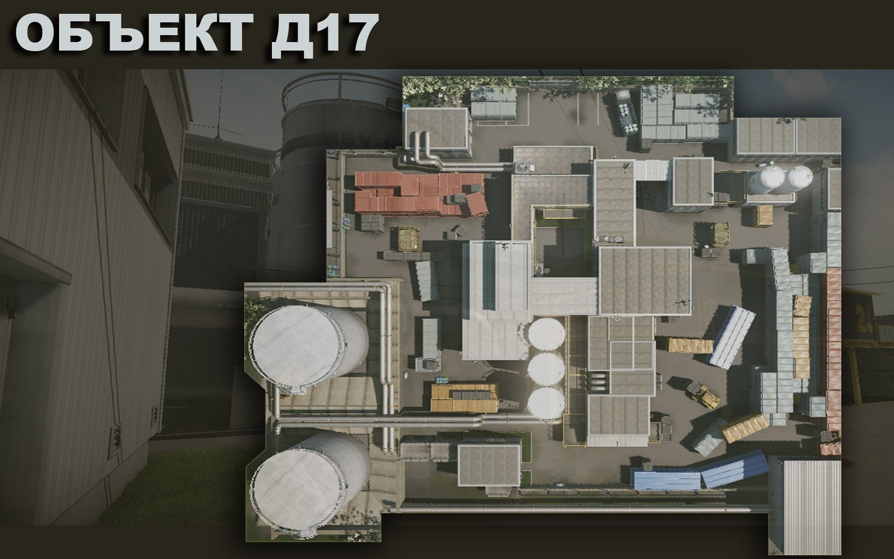
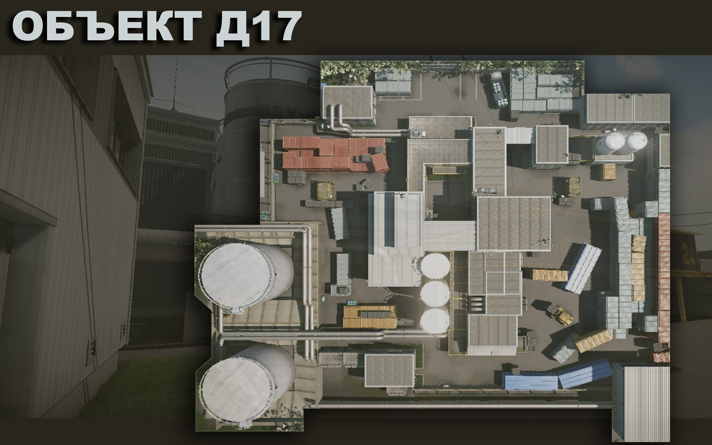

Достяжения
Эксперт по переработке
Значок «Эксперт по переработке»:
Выиграть 10 матчей на карте «Объект Д17» в режиме «Подрыв»
Зачистка объекта
Значок «Зачистка объекта»:
Выиграть 25 матчей на карте «Объект Д17» в режиме «Подрыв»
Разрушитель объекта
Значок «Разрушитель объекта»:
Выиграть 50 матчей на карте «Объект Д17» в режиме «Подрыв»
Любитель «Объекта Д17»
Жетон «Любитель «Объекта Д17»»:
Занять первое место на карте «Объект Д17» в режиме «Подрыв» 25 разЗавсегдатай «Объекта Д17»
Жетон «Завсегдатай «Объекта Д17»»:
Занять первое место на карте «Объект Д17» в режиме «Подрыв» 50 разМастер «Объекта Д17»
Жетон «Мастер «Объекта Д17»»:
Занять первое место на карте «Объект Д17» в режиме «Подрыв» 100 раз